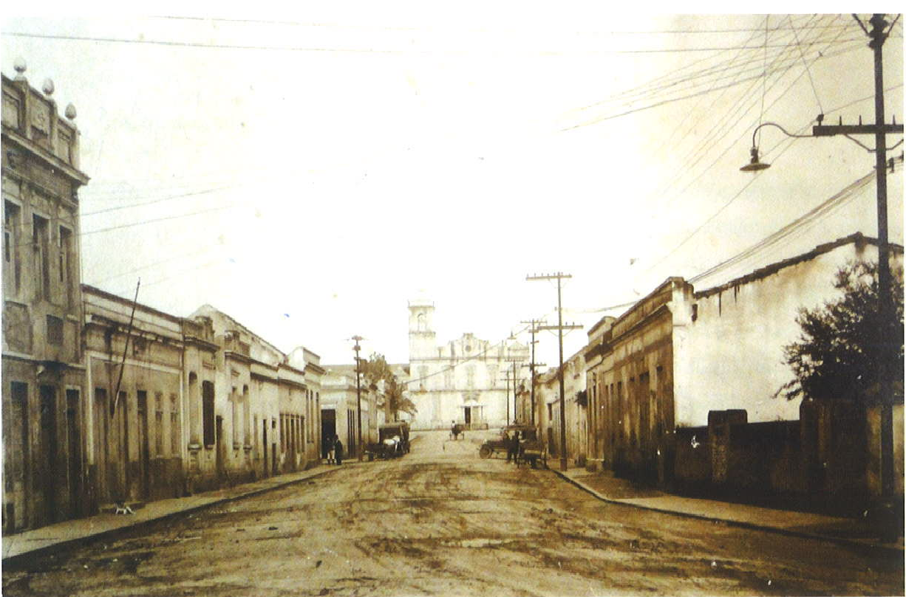
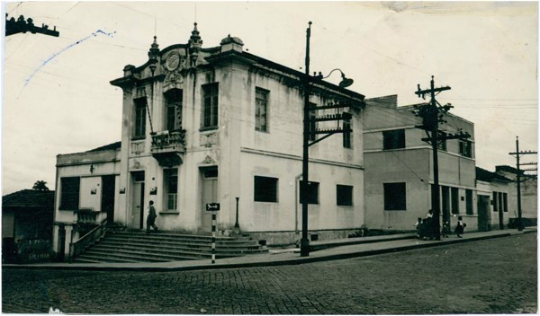
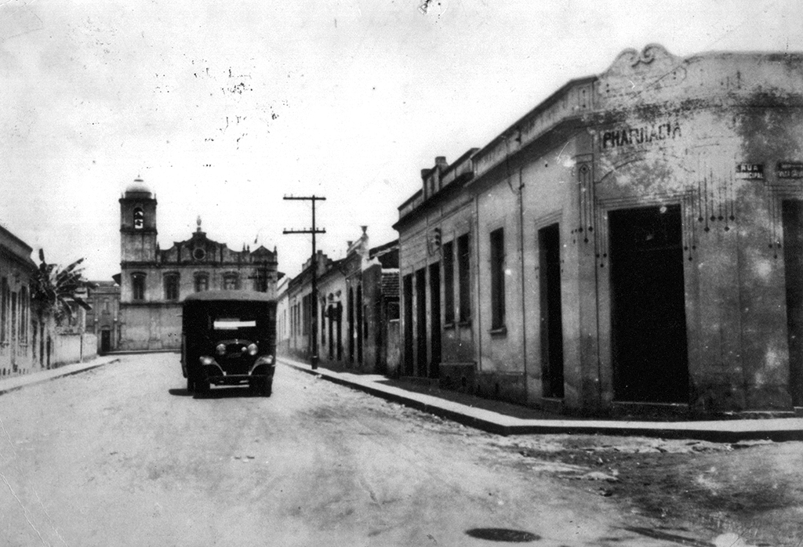
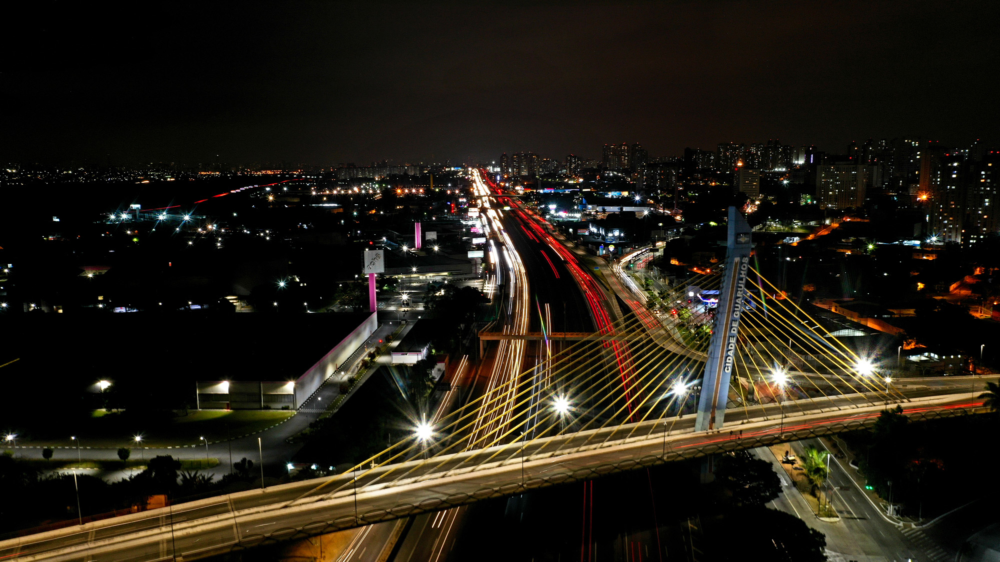

MINHA CIDADE GUARULHOS
HISTÓRIA

Guarulhos foi fundada em 8 de dezembro de 1560 pelo Padre Jesuíta Manuel de Paiva, com o nome de Nossa Senhora da Conceição, em um local até então habitado pelos índios Guarus, da tribo dos Guaianases.
Em 1590 foram descobertas minas de ouro, na região onde atualmente é o bairro de Lavras. As chamadas 'Lavras Velhas do Geraldo' podem ser vistas, hoje, na margem direita da estrada que se dirige de Cumbica para Nazaré.

D. Pedro II visitou a região em 1880, a qual foi elevada à Província de Nossa Senhora da Conceição de Guarulhos. Apenas em 1906 uma Lei Estadual determinou que Guarulhos recebesse a denominação de cidade.
No Brasil Colônia, durante os séculos XVII e XVIII, foram delimitadas sesmarias organizando a ocupação da região. Os sesmeiros se dedicaram à agricultura e à mineração e, como atividade de apoio, criavam gado vacum e cavalar. Entre os anos seiscentos e o início do século XX, houve produção de álcool e aguardente, embora o clima úmido e frio fosse propício a causar ferrugem ao trigo, mosaico a cana e curuquerê ao algodão.
O trabalho escravo foi realizado principalmente por negros de origem sudanesa, denominados Gegês, e foi utilizado em larga escala. Segundo o tombamento das propriedades rurais da Capitania de São Paulo de 1817, registraram-se 183 escravos na Freguesia da Conceição dos Guarulhos, pertencentes a 28 lavradores das seguintes áreas: Bom Jesus, Bom Sucesso, Guavirotuba, Itaverava, Lavras, Pirucaia, São Gonçalo, São Miguel (Pimentas) e Varados.
Em 1915 Guarulhos recebe o Ramal Guapyra - Guarulhos, da estrada de ferro da Cantareira, possibilitando o escoamento de madeira, pedra e tijolos, fabricados em diversas olarias da região e amplamente utilizados na construção civil na capital. A cidade ganhou cinco estações: Vila Galvão, Torres Tibagy, Gopoúva, Vila Augusta e Guarulhos, além do prolongamento até a Base Aérea.

O início do século XX marcou também a chegada da energia elétrica (Light & Power), dos pedidos para instalação da rede telefônica, licenças para implantação de indústrias de atividades comerciais e dos serviços de transporte de passageiros.
Na década de 40 foi inaugurada a Biblioteca Pública Municipal, o primeiro Centro de Saúde da cidade e a Santa Casa de Misericórdia, além de indústrias do setor elétrico, metalúrgico, plástico, alimentício, de borracha, calçados, peças para automóveis, relógios e couros. Em 1945 a Base Aérea de São Paulo (BASP) foi transferida do Campo de Marte, em São Paulo, para o bairro de Cumbica, em Guarulhos.
Nos anos 50 a inauguração das rodovias Presidente Dutra e Fernão Dias aproxima pessoas e mercadorias da cidade. Guarulhos se viu unida a São Paulo, no momento histórico de aceleração industrial, e ao Rio de Janeiro, ainda então Capital Federal e centro de decisões políticas e econômicas, gerando, portanto, um impulso para instalação de indústrias nos trechos das rodovias que passam pelo município.
A fase dos anos 1960/1970, é marcada pela estruturação de atividades industriais que em grande medida pautaram os caminhos da migração para o Estado de São Paulo. Em 1963 foi fundada a Associação Comercial e Industrial de Guarulhos, hoje, Associação Comercial e Empresarial de Guarulhos (ACE).
Em 1985 foi inaugurado o aeroporto de Cumbica, hoje denominado 'Aeroporto Internacional de São Paulo-Guarulhos Governador André Franco Montoro', o maior da América do Sul.
Devido à industrialização ocorrida no município, o afluxo do contingente humano incentivou a formação de loteamentos efetuados sem grandes preocupações com a urbanização, a infra-estrutura e os serviços de utilidades públicas. O crescimento populacional da cidade de Guarulhos é um reflexo do processo de urbanização que afetou o Brasil, especialmente nos últimos 50 anos.
Formação Administrativa
Freguesia criada com a denominação de Conceição de Guarulhos, em 1600, no município de São Paulo.

Elevado à categoria de vila com a denominação de Conceição de Guarulhos pela Lei Provincial n.º 34, de 24-03-1880, desmembrado do município de São Paulo. Sede na antiga povoação de Conceição de Guarulhos. Constituído do distrito sede. Instalado em 24-01-1881.
Pela Lei Estadual n.º 1.021, de 06-11-1906, o distrito de Conceição de Guarulhos tomou a denominação de simplesmente de Guarulhos.
Elevado à condição de cidade com a denominação de Guarulhos (ex-Conceição de Guarulhos), pela Lei Estadual n.º 1.038, de 19-12-1906.
Em divisão administrativa referente ao ano de 1911, o município é constituído do distrito sede.
Em divisões territoriais datadas de 31-XII-1936 e 31-XII-1937, o município permanece constituído do distrito sede.
Assim permanecendo em divisão territorial datada de 1-VII-1960.
Pela Lei Estadual n.º 3.198, de 23-12-1981, é criado o distrito de Jardim Presidente Dutra e anexado ao município de Guarulhos.
Em divisão territorial datada de 1988, o município é constituído de 2 distritos: Guarulhos e Jardim Presidente Dutra.
Assim permanecendo em divisão territorial datada de 2009.
© 2023 Cidade de Guarulhos. Todos os direitos reservados.